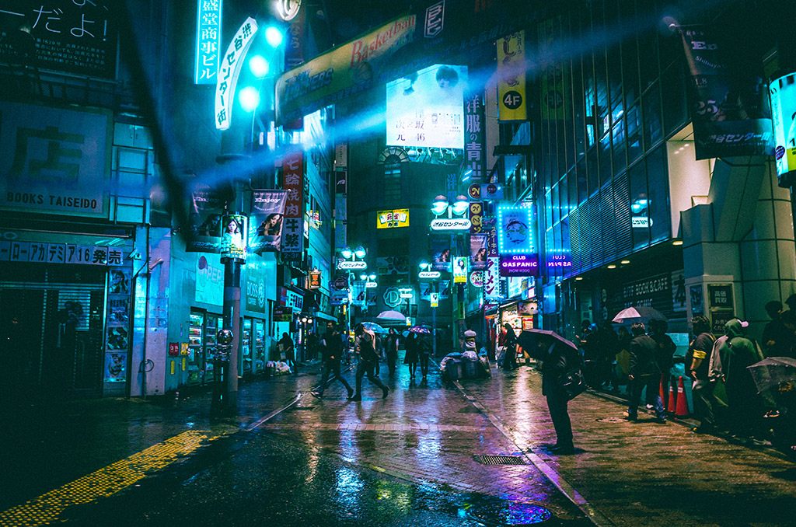
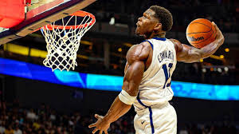
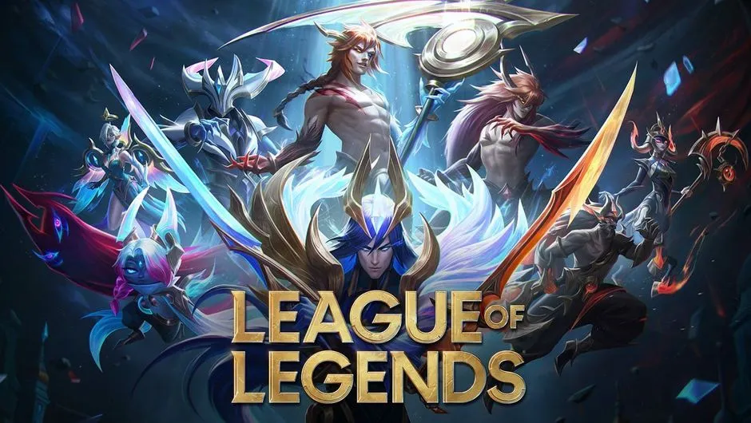

Mes centres d'intérêt, hobbies et projets
Technicien Systèmes et Réseaux
Voici 5 domaines qui me tiennent à cœur.
Design

Site vitrine fictif pour un fast food de jeunse
Photographie

Passion depuis le lycée. J'aime capturer des paysages urbains. J'utilise un Canon EOS et retouche mes photos sous Lightroom.
Basketball

Je joue depuis l'âge de 12 ans. Ce sport m'a appris l'esprit d'équipe et la persévérance. (supportaire des Denver Nuggets)
Jeux vidéo et Game design

Fan de RPG et de jeux de stratégie. J'apprends les bases de
Unreal Engine pour créer des jeux.
Je joue aussi à League of Legends, un jeu compétitif qui m'aide à développer ma réflexion stratégique, ma réactivité et mon sang-froid. (Renekton top main !)
Automobile

Je suis aussi intéressé par les voitures de sport, en particulier les modèles Audi RS et Mercedes AMG.
J'aime suivre les dernières nouveautés et les performances de ces véhicules.